2019年北京市中考地理真题 原卷解析
2019年北京市中考地理试卷
参考答案与试题解析
一、选择题（共40分）本部分40小题，每小题1分，共40分．在每小题列出的四个选项中，选出最符合题目要求的一项．
1．【分析】人们根据地球的形状并按一定的比例缩小后，制作成地球模型，这就是地球仪。地球仪是学习地理的重要工具之一。
【解答】解：地球仪可以演示地球的自转和公转；故A正确。
人类认识地球的形状是一个漫长的过程，无法通过地球仪看到这个过程；故B错误。
地球仪是人们仿照地球的形状，按照一定的比例尺缩小，制作的地球模型，无法精准测量山地的海拔，无法直接读出地球的半径和表面积；故C、D都错误。根据题意。
故选：A。
【点评】本题考查了地球仪和地球运的相关知识，理解解答即可。
如图为小明同学观赏“金光穿洞”后发的朋友圈截图和他手绘的颐和园游览图。读图，完成第2﹣6题。
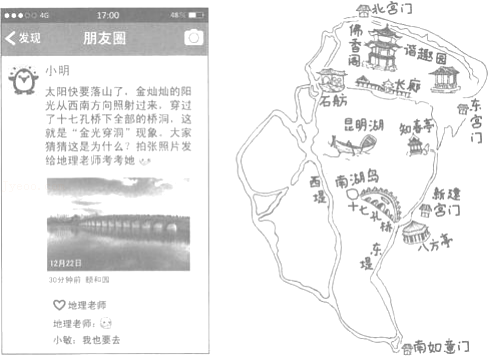
2．【分析】在天气预报图上，我们可以看到一些符号，这些符号都是用来表示天气状况的，他们都有特定的含义。我们只有认识各种天气符号，才能看懂天气预报，才能为我们的生活和生产服务。
【解答】解：由题可知，观赏“金光穿洞”需要在晴天进行。A天气符号为小雨；B天气符号为晴天；C天气符号为小雪；D符号为雾。
故选：B。
【点评】本题主要考查常用的天气预报符号的解读，牢记即可。
3．【分析】地理常识是学习地理的基础，涉及面广泛而多种多样，平时要注意积累。
【解答】解：谐趣园在颐和园北部，离桥洞较远，在十七孔桥上无法观赏到桥下全部桥洞的“金光”；通过小明朋友圈的内容可知，拍摄时“太阳快要落山了”，时间不在中午；朋友圈的内容中，拍摄时“太阳快要落山了”，时间为傍晚。
故选：D。
【点评】该题以小明同学观赏“金光穿洞”景观为背景，主要考查识图能力。
4．【分析】“金光穿洞”需要特走时间和特定地点才能形成；与地球的自转、公转及天气有关。
【解答】解：该题以小明同学观赏“金光穿洞”景观为背景，主要考查地球运动和天气有关的知识；通过题目和所学可知，“金光穿洞”现象与地球的自转和地球的公转有关；观赏“金光穿洞”需要在晴天的天气情况下进行；故选项A符合题意。
故选：A。
【点评】本题考查了地球自转、公转和天气对“金光穿洞”现象的形成有关，理解记忆解答。
5．【分析】北京，位于华北平原，东南距渤海约150千米，面积16800多平方千米。民国时期，称北平。新中国成立后，是中华人民共和国的首都，简称“京”，现为中国四个中央直辖市之一，全国第二大城市及政治、交通和文化中心。
【解答】解：通过题目 和所学可知，颐和园是世界文化遗产，符合北京城市职能中的文化中心。
故选：B。
【点评】该题以小明同学观赏“金光穿洞”景观为背景，主要考查北京城市职能的相关知识。
6．【分析】该题以小明同学观赏“金光穿洞”为背景，主要考查地图阅读的相关知识。
【解答】解：读图可知，通过阅读材料及图片信息可知，新建宫门距离十七孔桥最近，所以应该把导航目的地设置为新建宫门；故选项C符合题意。
故选：C。
【点评】本题主要考查地图阅读的相关知识，读图解答即可。
读万卷书，行万里路。“诗仙”李白不仅是浪漫主义诗人，也是个“旅行者”。在旅行过程中写下了许多美丽的诗篇。如图为李白行走足迹示意图。读图，完成第7﹣9题。
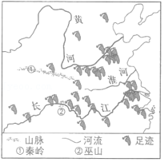
7．【分析】我国地形复杂多样，山脉构成了地形的骨架，平原、高原、盆地、丘陵镶嵌其中；我国北靠世界上面积最大的大陆亚欧大陆，面向世界上最大的大洋太平洋，海陆热力差异显著，使得我国东部形成了典型的季风气候区。
【解答】解：阅读材料及图片信息可知，李白行走的足迹多在我国地势的第三级阶梯，多在我国季风气候区，足迹地跨秦岭一淮河南北两大地区；我国少数民族主要分布在东北、西北、西南地区；故选项B符合题意。
故选：B。
【点评】本题以“李白行走足迹示意图”为背景，主要考查中国地理的相关知识。
8．【分析】长江发源于唐古拉山，最后注入东海，全长6300千米，是我国第一长河；长江上中下游的分界线分别是：宜昌、湖口；长江上游奔流于山高谷深的横断山区，落差大，江流湍急，水能资源十分丰富。
【解答】解：通过诗句“两岸猿声啼不住，轻舟已过万重山”，可以得出此诗句描绘的地区为长江三峡，位于长江中上游地区。
故选：A。
【点评】该题主要以“李白行走足迹示意图”为背景，主要考查中国河流的相关知识。
9．【分析】我国共有34个省级行政单位，包括23个省、5个自治区、4个直辖市和香港、澳门两个特别行政区。
【解答】解：诗句“蜀道之难，难于上青天”中的“蜀”是四川省的简称，由此可判定，该诗句反映的是四川省的地形崎岖。山西省简称晋，云南省简称云或滇，贵州省简称贵或黔。
故选：A。
【点评】本题考查我国省区的概况，理解解答即可。
如图是反映新中国成立以来不同时期的人口问题或人口政策的一组漫画。读图，完成第10﹣12题。
10．【分析】中华人民共和国成立后，由于人民生活水平的提高和医疗卫生条件的改善，人口死亡率大幅度下降，中国人口快速增长。根据2010年全国第六次人口普查结果，中国总人口为13.7亿，约占世界人口总数的1/5，是世界上人口最多的国家。
【解答】解：通过材料和所学可知，新中国成立后人口增长过快，为了缓解该问题，故当时提倡一对夫妻生育一个孩子。
故选：D。
【点评】该题以新中国成立以来不同时期的人口问题或政策的漫画为背景，主要考查人口问题。
11．【分析】中华人民共和国成立后，由于人民生活水平的提高和医疗卫生条件的改善，人口死亡率大幅度下降，中国人口快速增长。根据2010年全国第六次人口普查结果，中国总人口为13.7亿，约占世界人口总数的1/5，是世界上人口最多的国家。
【解答】解：根据所学可知，新中国成立后人口增长过快，因此将计划生育作为基本国策，提倡一对夫妻生育一个孩子；现阶段由于人口老龄化问题西题，为了缓解人口老龄化的问题，实施全面二孩政策，故正确顺序为a﹣c﹣d﹣b。
故选：A。
【点评】本题以中国不同时期的人口问题或政策的漫画为背景，主要考查人口问题及对应政策的变化过程。
12．【分析】20世纪70年代以来，我国实行了计划生育，在控制人口数量方面取得巨大成就，但同时也出现劳动力减少、社会养老负担加重，人口老龄化等问题。2015年10月29日党的十八届五中全会决定：坚持计划生育的基本国策，完善人口发展战略，全面实施一对夫妇可生育两个孩子政策，其目的就是为应对当前出现的人口问题，逐步调整完善现行的生育政策，促进人口长期均衡发展。
【解答】解：人口政策不仅能解决人口增长问题，还可解决其他相关人口问题，人口政策的制定应适应社会发展需求，人口发展应与资源、环境相协调，人口增长育应与经济发展相适应。
故选：D。
【点评】该题以中国不同时期的人口问题或政策的漫画为背景，主要考查人口政策的知识。
我国国家公园的设立旨在保护自然生态系统的完整性，推进自然资源的科学保护和合理利用，其代表国家形象，展现中华文明，还可以开展环境教育。如图为日前我国启动的10个国家公园体制试点分布图。读图，完成第13﹣14题。
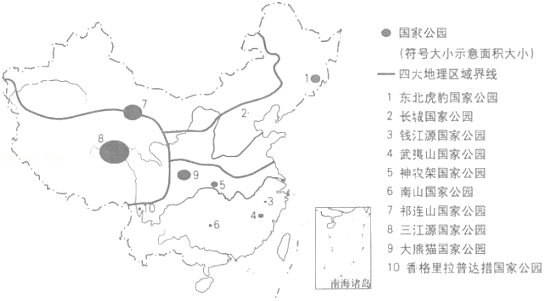
13．【分析】中国幅员辽阔，自然环境复杂多样，形成了各具特色的地理区域。在中国地图上，按照秦岭﹣淮河线、400毫米年等降水量线和青藏高原边缘线这三条重要的地理界线，并根据实际情况作一定的调整，把中国划分为四大地理区域，即北方地区、南方地区、西北地区和青藏地区。
【解答】解：北方地区四季分明与国家公园的建立并无直接关系；据图可知，青藏地区国家公园面积最大，并非南方；据图可知，三江源国家公园位于地势最高的青藏地区；据图可知，大熊猫国家公园位于南方地区。
故选：C。
【点评】该题以国家公园的设立为背景，主要考查中国四大地理区域的相关知识。
14．【分析】旅游业包括国际旅游和国内旅游两个部分。两者由于接待对象不同而有所区别，但其性质和作用是基本一致的。旅游业能够满足人们日益增长的物质和文化的需要。通过旅游使人们在体力上和精神上得到休息，改善健康情况，开阔眼界，增长知识，推动社会生产的发展。
【解答】解：根据材料“我国国家公园的设立旨在保护自然生态系统的完整性，推进自然资源的科学保护和合理利用…还可以开展环境教育”可知，国家公园的设立并非为了发展旅游业增加收入，而是为了保护自然生态系统的完整性，可以推进自然资源的合理利用，可以作为开展环境教育的基地等。
故选：B。
【点评】该题以国家公园的设立为背景，主要考查国家公园设立的意义。
如图为《清明上河图》的苏绣作品（局部），反映了北宋都城汴梁（今河南开封）的繁华风貌。读图，完成第15﹣17题。
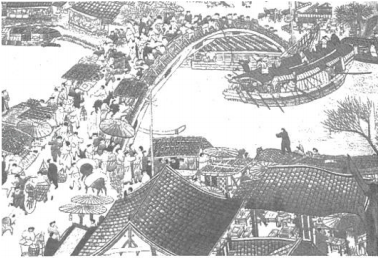
15．【分析】人们集中地居住在一起，就形成了聚落。从规模上看，聚落有大有小，大到人口上千万的巨型都市，小到只有几十个人的村庄。聚落的主要形式包括城市和乡村，它们具有不同的景观特色。聚落的主要形式包括乡村和城市。乡村是人口规模不大，主要从事农业生产活动的居民聚居地。城市是人口达到一定规模，主要从事非农业生产活动的居民聚居地。
【解答】解：图中商铺、熙熙攘攘的人群等景观符合城市聚落的特点，且根据材料“北宋都城”可知，图中景观反映的是城市聚落。
故选：A。
【点评】该题以《清明上河图》为背景，主要考查聚落的相关知识，读图理解答题即可。
16．【分析】依据人民生活与地理环境的关系分析解答。
【解答】解：据图可知：
该地区多依靠河流进行运输，水流平稳、航运发达，故A正确
该地区人口密集、商业繁荣，故B错误；
该地区地势平坦，高低落差小，水流平稳，故C错误；
该地区地处河南开封，秦岭﹣淮河以北地区，属于温带季风气候，夏季多雨，故D错误。
故选：A。
【点评】该题以《清明上河图》为背景，主要考查人类聚落形成条件的知识和识图能力。
17．【分析】工业是国民经济的主导力量。工业为国民经济各个部门提供生产所必需的各种原材料、能源和技术装备，也为人们提供丰富多样的生活资料。各地区应根据当地的自然资源条件、人口和劳动力状况、市场因素以及现有经济基础等来发展工业。
【解答】解：江苏属于南方地区，植桑养蚕，有苏绣所需的原料优质蚕丝，D正确；苏绣作为我国非物质文化遗产，所反映的内容众多，例如：人物、植物、动物等，不能体现出西北大漠的地域特点，也并非都反映了江南水乡的景观，蒙古族集中分布于西北地区，ABC不准确。
故选：D。
【点评】该题以苏绣为背景，主要考查四大地理区域的相关知识。
2018年8月，堪称“世界最强芯”的新一代“中国芯”以六项世界第一震惊全球。目前，“中国芯”已在通讯等领域应用。芯片是半导体电子元器件的统称，在现代电子与信息技术产业的发展中起着关键性作用。如图为我国在建主流芯片项目的投资比重分布示意图。读图，完成第18﹣20题。
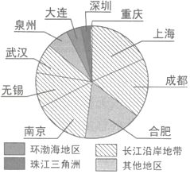
18．【分析】高新技术产业是以电子和信息类产业为“龙头”的产业，产品的科技含量很高，产品更新换代快。我国高新技术产业以高新技术开发区的形式分布，大多依附于大城市，呈现出大分散、小集中的特点。东部高新技术产业发展速度远高于中西部地区。当前，从地区布局上看，我国已初步形成了长江三角洲、珠江三角洲、环渤海地区等各具特色的高技术产业带。
【解答】解：据材料可知，“中国芯”以六项世界第一震惊全球以及在电子与信息技术发展中起着关键作用，说明其技术含量高，科技比重大，属于高新技术产业。
故选：D。
【点评】该题以“中国芯”为背景，主要考查工业的分类。
19．【分析】长江三角洲：中国长江和钱塘江在入海处冲积成的三角洲。包括江苏省东南部和上海市，浙江省东北部。是长江中下游平原的一部分。是中国人口最稠密的地区之一。
【解答】解：据图可知，占比最大的城市有上海、成都、南京、无锡、武汉等，这些均属于长江沿岸地带。
故选：C。
【点评】该题以“中国芯”为背景，主要考查区域定位的知识和读图能力。
20．【分析】高新技术产业是以电子和信息类产业为“龙头”的产业，产品的科技含量很高，产品更新换代快。我国高新技术产业以高新技术开发区的形式分布，大多依附于大城市，呈现出大分散、小集中的特点。东部高新技术产业发展速度远高于中西部地区。当前，从地区布局上看，我国已初步形成了长江三角洲、珠江三角洲、环渤海地区等各具特色的高技术产业带。
【解答】解：①高新技术产业需要劳动力素质较高，而非数量众多；
②我国目前要走自主研发的道路，实现中国创造，“中国芯”作为为自主研发项目9可推动我国自主创新的发展；
③“中国芯”的研发，推动了我国的科技发展，同时也为世界带来了更多可能性，促进了交流与沟通；
④“中国芯”由于技术水平高，所以可以提高相关产品的价值。
故选：C。
【点评】该题以“中国芯”为背景，主要考查高新技术产业的特点及影响。
为了更好地进行海峡两岸农业合作交流，海南省搭建了琼台基地等交流平台。如图为海南岛和台湾岛的位置及地形图。读图，完成第21﹣23题。
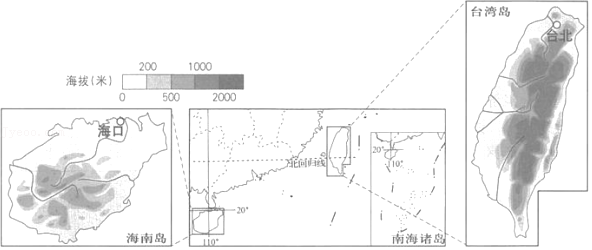
21．【分析】我国岛屿面积在500平方米以上的就有6500多个，其中台湾岛面积最大，它位于我国东南海域，东临太平洋，北临东海，南临南海，西隔台湾海峡与福建相望。
【解答】解：根据图文资料和所学知识可知，与海南岛相比，台湾岛距离大陆更远，纬度更高，位置偏北，面积更大。
故选：C。
【点评】本题以海南省搭建琼台基地等交流平台为背景，主要考查海南岛和台湾岛的位置及面积的相关知识。
22．【分析】我国行政区划基本分为省、县、乡三级，目前共有34个省级行政单位，包括23个省、5个自治区、4个直辖市、2个特别行政区。
【解答】解：海南岛和台湾岛地形类型较为复杂；海南岛和台湾岛纬度位置较低，热量充足，降水丰沛；育种技术先进、海上交通便利是社会经济因素。
故选：B。
【点评】本题考查琼台两地农业合作的有利自然条件，理解解答即可。
23．【分析】台湾省位于我国东南海域，主体是台湾岛，此外，还有周围的澎湖列岛、钓鱼岛等200多个岛屿，其中台湾岛是我国最大的岛屿；台湾西隔台湾海峡与福建省相望，临东海和南海，而且台湾岛东海岸直接面向太平洋；台湾岛多山，高山和丘陵面积占全部面积的三分之二以上，台湾省西部地区以平原为主。
【解答】解：台湾是祖国领土不可分割的一部分，台湾省的居民中，汉族约占97%主要是明清以来从广东、福建两省迁居台湾的居民的后代。所以海峡两岸文化同脉，民族同根，教育语言相通。台湾和祖国大陆隔海相望。
故选：A。
【点评】本题考查台湾和祖国大陆的渊源，理解解答即可。
小明为准备去东南亚旅游的爷爷奶奶定制行程。如图为预定过程中查找到的航班时刻表以及马来西亚首都吉隆坡的气候资料。读图，完成第24﹣27题。
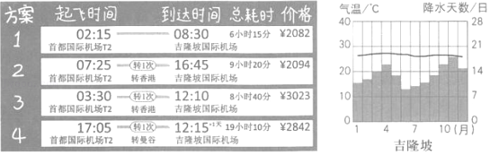
24．【分析】东南亚中南半岛上山脉、河流多由北向南延伸，形成了山河相间、纵列分布的特点，自西向东有伊洛瓦底江、萨尔温江、湄南河、湄公河和红河，河流自北向南流，流入印度洋和太平洋；气候属于热带季风气候；众多河流的下游两侧形成冲积平原或河口三角洲，是农业、人口、城市比较集中的地区。
【解答】解：据图可知六月份吉隆坡降水天数最少，且吉隆坡纬度低，全年高温；吉隆坡纬度低，全年高温；二月份吉隆坡降水天数在10天左右，气候并不干旱；吉隆坡纬度低，全年高温，二月份的北京正值冬季，气候寒冷，此时前往吉隆坡可避开北京的寒冷。
故选：D。
【点评】该题以小明为准备去东南亚旅游的爷爷奶奶定制行程为背景，主要考查东南亚气候的相关知识。
25．【分析】公路运输机动灵活、可以从门口到门口；航空运输速度快、但是运量小；铁路运输速度较快、运量较大；水上运输运量大、但是速度慢、受地域的限制；管道运输在地下，一般输送石油、天然气和水。
【解答】解：根据图文资料可知，1、2、3、4四种方案中，方案1机票价格最低、飞行时间最短且无需中途转机，方案2起飞与降落时间相对合理。
故选：D。
【点评】该题为小明为准备去东南亚旅游的爷爷奶奶定制行程为背景，主要考查图表阅读及信息提取的能力。
26．【分析】东南亚中南半岛上山脉、河流多由北向南延伸，形成了山河相间、纵列分布的特点，自西向东有伊洛瓦底江、萨尔温江、湄南河、湄公河和红河，河流自北向南流，流入印度洋和太平洋；气候属于热带季风气候；众多河流的下游两侧形成冲积平原或河口三角洲，是农业、人口、城市比较集中的地区。
【解答】解：防止在城市中迷路应选择城市交通图，而不是世界地图；东南亚地形以山地、丘陵为主，没有海拔较高的地区，不会出现高原反应；东南亚位于板块交界处，地壳运动活跃，易发生火山和地震；东南亚纬度低、气温高，不用防寒保暖。
故选：C。
【点评】该题以东南亚旅游为背景，主要考查东南亚地图、地形、气候和自然灾害的知识。
27．【分析】东南亚位于亚洲的东南部，包括中南半岛和马来群岛两大部分，气候类型主要是热带雨林气候和热带季风气候，东南亚各国普遍种植水稻，稻米是当地居民的主要粮食，也是传统的出口产品。东南亚是世界上海外华人分布最集中的地区，主要来自于我国东南沿海一代，特别是广东、福建两省。
【解答】解：东南亚旅游城市多位于海边，光照充足，适宜沙滩漫步；东南亚无草原分布，无法骑马；东南亚纬度低，气温高，没有高山积雪，无法滑雪；金字塔在埃及，不在东南亚。
故选：A。
【点评】该题以东南亚旅游为背景，主要考查东南亚地形、气候和世界遗产的知识。
大豆是一种经济作物。目前，巴西是我国进口大豆的国家之一。如图为巴西大豆产区及主要运输线路分布图。读图，完成第28﹣30题。
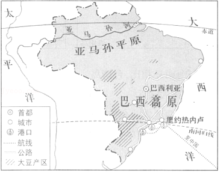
28．【分析】巴西是南美洲面积最大的国家，国土面积854.7万平方千米，差不多占了南美大陆总面积的一半。巴西人口多分布在东部沿海地区，圣保罗是巴西第一大城市，里约热内卢是巴西最大的海港，巴西的两大地形区是亚马孙平原和巴西高原。
【解答】解：读图可知，大豆产区主要分在在巴西高原上。
故选：D。
【点评】该题以巴西大豆生产为背景，主要考查地形的知识和学生的读图能力。
29．【分析】现代化的交通运输方式主要有铁路、公路、水路、航空和管道运输。经过长期的不懈努力，中国初步形成了由这些交通运输方式组成的现代化交通运输网络体系。
【解答】解：读图可知，从大豆产区到港口的交通运输方式为公路运输；从港口出口运往中国的交通方式为海上运输。故B正确，符合题意。
故选：B。
【点评】该题以巴西大豆生产为背景，主要考查交通运输的知识和学生的读图能力。
30．【分析】针对发展中国家与发达国家分布的南北差异，国际上把这种经济发展差别说成是“南北差距”。发展中国家与发达国家之间关于经济、政治等方面问题的商谈，叫做“南北对话”。发展中国家之间的互助合作，称为“南南合作”。
【解答】解：发展中国家之间的互助合作，称为“南南合作”。中国与巴西都是发展中国家，因此中国与巴西之间的合作符合“南南合作”。
故选：A。
【点评】本题考查的是发展中国家之间的关系，理解答题即可。
中国文化通过孔子学院在世界各地广泛传播，目前已有超过150个园家和地区建有500多所孔子学院和1000多个孔子学堂。如图为世界主要语言及部分孔子学院（堂）的分布图。读图，完成第31﹣33题。
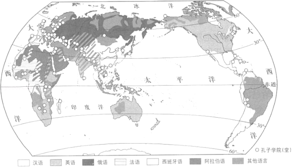
31．【分析】地球上的陆地被海洋分割成六个大块和许多小块，面积较大的陆地叫大陆，面积较小的陆地叫岛屿，大陆和它附近的岛屿合称大洲。全球共有七大洲，按面积由大到小排列分别为：亚洲、非洲、北美洲、南美洲、南极洲、欧洲和大洋洲。
【解答】解：读图可知，孔子学院（堂）数量北半球多于南半球，欧洲孔子学院（堂）数量多于北美洲，孔子学院（堂）主要分布于中低纬度地区，汉语分布区孔子学院（堂）数量较少，主要分布于非汉语地区。
故选：B。
【点评】本题考查孔子学院（堂）的分布，读图解答即可。
32．【分析】孔子学院被誉为21世纪传播中华文化的“新丝绸之路”。2004年11月全球首家孔子学院在韩国成立，至2011年11月，全球已有105个国家和地区，建立了350多所孔子学院和500个孔子学堂，全球学习汉语的外国人已达1亿人。目前还有76个国家的400多个机构强烈要求申办孔子学院。孔子学院如雨后春笋一般在世界各地生根发芽。
【解答】解：①汉语为我国的官方语言，中华特色鲜明；②中国茶艺为我国特色文化；③西餐制作为西方国家特色，未体现中华文化；④太极拳为我国的非物质文化遗产，体现了我国传统文化⑤软笔书法为我国的传统文化；⑥拉丁舞不能体现我国的传统文化及特色。综上所述，故①②④⑤符合题意，③⑥不符合题意。
故选：B。
【点评】该题以孔子学院（堂）为背景，考查中华文化相关知识，牢记即可解答。
33．【分析】在经济发展中，科学技术的作用越来越重要；为推动经济建设，发展教育事业、培养各种高素质人才、提高劳动者素质越来越重要；文化产业、文化生产力在现代经济的总体格局中的作用越来越突出。
【解答】解：孔子学院（堂）的建立与增加贸易出口无直接关系，孔子学院（堂）的建立无法改变世界人口分布的模式；孔子学院（堂）的建立推动了中华文化走向世界，有利于中外文化交流；孔子学院（堂）体现的是中华文化的共同特点，无法体现中国地域差异的特点。
故选：C。
【点评】该题以孔子学院（堂）为背景，考查文化交流的作用及影响。
“广袤富饶的平原，碧波荡漾的水乡，辽阔壮美的草原，浩瀚无垠的沙漠，奔腾不息的江海，巍峨挺拔的山脉，承载和滋润了多彩的亚洲文明。”国家主席习近平在亚洲文明对话大会上用“河•和•合”来讲述亚文明。读图，完成第34﹣37题。
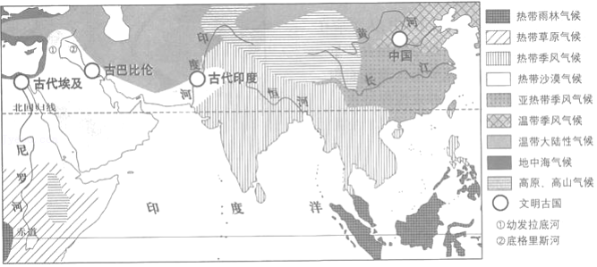
34．【分析】亚洲面积约4400万千米2，是世界第一大洲。从半球位置来看，亚洲主要位于东半球和北半球。从纬度位置来看，亚洲北部深入北极圈内，南部延伸到赤道以南。从海陆位置来看，亚洲东、北、南三面分别濒临太平洋、北冰洋和印度洋，西与欧洲相连，西南与非洲为邻，东北隔白令海峡与北美洲相望。
【解答】解：各民族习俗、节日等民俗风情均有差异；材料中写道“广袤富饶的平原，碧波荡漾的水乡，辽阔壮美的草原，浩瀚无垠的沙漠，奔腾不息的江河，巍峨挺拔的山脉，承载和滋润了多彩的亚洲文明。”因此亚洲多彩的文明受自然环境的影响；本题主要说明自然环境影响人文环境，而非亚洲文明塑造亚洲地形；各地区由于自然环境不同、民族风俗不同所展现的地域文化也各不相同。
故选：B。
【点评】该题以亚洲文明大会召开为背景，考查亚洲特色文化的相关知识。
35．【分析】人们最早的生产生活一般选择地势平坦、土壤肥沃、水源充足、灌溉便利、水运方便、气候适宜的地方。
【解答】解：古巴比伦文明发源于两河流域，图中河流除了注入印度洋，还有注入太平洋和地中海的河流，古印度文明发源于印度河流域，图中河流并非均发源于青藏高原。
故选：C。
【点评】该题以四大文明古国为背景，主要考查读图识图能力。
36．【分析】亚洲地面起伏很大，中部高，四周低，地形以高原、山地为主，亚洲是世界上除南极洲外平均海拔高度最高的大洲。亚洲大河多发源于中部的高原山地，顺地势呈放射状向四周奔流入海。
【解答】解：恒河所在区域气候类型为热带季风气候，降水量大，有明显的旱雨两季，雨季会导致河流存在汛期；幼发拉底河位于美索不达米亚平原，地势低平，流速缓慢；黄河所在区域气候类型为温带季风气候，冬季寒冷干燥，气温低于0℃，导致黄河存在结冰期；长江水量季节变化大。根据题意。
故选：D。
【点评】该题以亚洲气候类型的分布和特点为背景，主要考查河流水文特征的影响因素。
37．【分析】和平与发展是当今时代的主题；在当代国际关系中，和平问题是指维护世界和平、防止产生新的世界战争问题；发展问题是指世界经济发展的问题，特别是发展中国家经济的发展问题。人类生活在同一个地球村，生活在历史和现实交汇的同一个时空，越来越成为你中有我、我中有你的命运共同体。采取共同行动，承担共同责任，构建人类命运共同体，成为各国解决全球性问题的必然选择。
【解答】解：①“和”是地区间和谐共处；②“和”是地区间统一文明，说法过于绝对；③“合”是地区间消除差异，说法过于绝对；④“合”是地区间互利合作。故B正确，符合题意。
故选：B。
【点评】本题主要考查地区合作的相关知识，理解解答即可。
山水林田湖是一个生命共同体，人的命脉在田，田的命脉在水，水的命脉在山，山的命脉在土，土的命脉在树。“天人合一”就是人与自然的和谐共生。如图为某区域景观示意图。读图，完成38﹣40题。
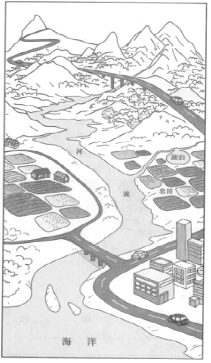
38．【分析】山水林田湖是一个生命共同体，人的命脉在田，田的命脉在水，水的命脉在山，山的命脉在土，土的命脉在树。用途管制和生态修复必须遵循自然规律，如果种树的只管种树、治水的只管治水、护田的单纯护田，很容易顾此失彼，最终造成生态的系统性破坏。
【解答】解：由图可知，河流流入海洋，是外流河；图示主要地形类型为山地和平原，没有高原；森林多分布在山地；图中桥梁跨越河流。
故选：D。
【点评】该题以景观示意图为背景，主要考查地形和河流的相关知识，读图理解解答即可。
39．【分析】影响聚落的因素除自然地理环境外，还受社会经济文化因素的制约。如生产方式，经济发展，传统风俗习惯，文化背景等。总之，影响聚落的因素是多方面的，任何聚落的形式、发展、衰亡都是某种主导因素与其他多种因素共同作用的杰作。
【解答】解：由图可知，农田主要分布在平原，聚落主要集中在平原，山区修路选择最平缓的路线，城市建设农田靠近湖泊。
故选：B。
【点评】该题以景观示意图为背景，主要考查聚落的相关知识。
40．【分析】山水林田湖是一个生命共同体，人的命脉在田，田的命脉在水，水的命脉在山，山的命脉在土，土的命脉在树。用途管制和生态修复必须遵循自然规律，如果种树的只管种树、治水的只管治水、护田的单纯护田，很容易顾此失彼，最终造成生态的系统性破坏。
【解答】解：陡坡开荒，扩大耕地增加粮食产量，导致植被覆盖率降低，引发水土流失；河流上游拦水，减少山区灌溉面积，不利于农田的发展；山区植树造林，可以涵养水源保持水土；河流下游填湖，建设大规模的城市，会导致湖泊调蓄能力下降。依据题意。
故选：C。
【点评】该题以“天人合一”为背景，主要考查可持续发展的相关知识。
二、综合题（共50分）
41．【分析】（1）在没有特殊标志的地图上，通常采用“上北下南，左西右东”进行判断方向；在有指向标的地图上，指向标的指向一般为北方，在有经纬网图的地图上，根据经纬网确定方向，经线指示南北方向，纬线指示东西方向。
（2）比例尺表示图上距离比实地距离缩小的程度。
（3）我国各类土地资源齐全，形成了耕地、林地、草地等多种土地类型。我国各类土地资源在土地资源总量中所占的比重是不同的，其中草地占的比重最大，耕地、林地所占比重相对偏小，后备土地资源不足，难以利用土地比重大。
【解答】解：（1）根据图中的方向来看，学农教室在学生公寓的东北方向，从图上量得两地的直线距离大约是5厘米，根据比例尺：图上一厘米表示实际距离100米，那么两地的直线距离约为500米，C符合题意。
（2）从中国农用地总量及构成图上来看，2016年我国农用地中林地比例最大。2016年和2012年耕地所占比例没有减少，但与2012年相比，2016年的农用地总量减少，所以耕地面积是减少的，原因可能是：城市的扩建占用了耕地以及这几年的退耕还草。
（3）从资料卡片中看出我国的农业机械化水平不断提高，农田水利设施的进步，导致抗灾（旱灾、涝灾、虫灾）能力明显增强，亩产量不断增加，可见：我国粮食产量稳步增长的主要原因是：农业科技快速发展。
（4）人口、耕地、粮食之间的关系：社会发展，人口增加以及城乡的发展加快，建设用地增加导致耕地面积减少，粮食产量减少人均不足，我们国家进口粮食总量增加，粮食安全受到威胁，这样的情况下，一方面在农业生产中提高农业机械化的水平以及提高生产效率，加大科技的投入提高单位面积粮食的产量，另一方面珍惜和合理利用每一寸土地，切实保护耕地。
（5）我国是人口大国，民以食为天，在农业发展方面要提高农业生产力；珍惜和合理利用每一寸土地。我国人口、耕地、粮食的关系分析：人口多，耕地少，粮食需求量大！是我国目前这三个问题的现状。并且人口还在不断的增多，耕地由于城市化的大量圈地和环境破坏，沙漠化，盐碱化和西南地区的石漠化，水土流失等问题，我国的耕地面积每年还在不断的递减。我国粮食产量虽然在不断的增加，但是由于局部地区的土壤受到破坏，因此粮食产量的增长受到耕地质量的限制！解决这个问题，主要靠限制人口数量，解决环境问题，保护环境，保护土壤，积极合理的利用土地，限制城市化对土地的侵蚀。发展农田水利技术等农业技术，制定相关的法律保护等措施，才能缓解人口，耕地和粮食产量的矛盾！另外粮食方面也可以从国外进口适当的粮食，保证粮食的库存安全性保障。
故答案为：（1）东北；C；
（2）林地；减少；A；
（3）D；
（4）①人口；②耕地；③粮食；
（5）我国人口、耕地、粮食的关系分析：人口多，耕地少，粮食需求量大！是我国目前这三个问题的现状。并且人口还在不断的增多，耕地由于城市化的大量圈地和环境破坏，沙漠化，盐碱化和西南地区的石漠化，水土流失等问题，我国的耕地面积每年还在不断的递减。我国粮食产量虽然在不断的增加，但是由于局部地区的土壤受到破坏，因此粮食产量的增长受到耕地质量的限制！解决这个问题，主要靠限制人口数量，解决环境问题，保护环境，保护土壤，积极合理的利用土地，限制城市化对土地的侵蚀。发展农田水利技术等农业技术，制定相关的法律保护等措施，才能缓解人口，耕地和粮食产量的矛盾！
【点评】此题主要考查了阅读地图的几个要素，以及我国人口、粮食、耕地三者之间的联系，考查内容较多，难度较大，认真分析解答。
42．【分析】江西地形以丘陵山地为主，盆地、谷地广布，具有亚热带温暖湿润季风气候。江湖众多，以鄱阳湖为中心呈向心水系，又是中国南方红壤分布面积较大的省区之一，植被以常绿阔叶林为主，具有典型的亚热带森林植物群落。
【解答】解：（1）据图1可知，江西省地形类型以山地、丘陵为主。中央红军长征出发地纪念园所在的地形部位是山谷，该地有河流流经；
（2）读图可得，于都县柑橘生长的有利自然条件是：各月均温多在12℃﹣37℃之间，符合柑橘生长的气温条件；年降水量超过1000m，符合柑橘生长的降水条件；山地、丘陵广布，利于排水；
（3）在县城不适宜大力种植柑橘。春小麦主要分布在东北平原，江西省主要的粮食作物是水稻，窑洞是北方地区黄土高原的传统民居，江西省不能承接港澳地区转移出来的金融业和房地产业；
（4）稀土属于非可再生资源。依据稀土的用途，可以重点发展 电子航空、机械制造、石化化工，不适宜发展食品工业；
（5）于都县应大力发展柑橘种植，可以停止稀土开采，因为当地自然条件适合柑橘种植，且有柑橘相关的深加工如精油加工等，有利于带动当地经济发展。
故答案为：
（1）1；山地、丘陵；C；
（2）各月均温多在12℃﹣37℃之间，符合柑橘生长的气温条件；年降水量超过1000m，符合柑橘生长的降水条件；山地、丘陵广布，利于排水；
（3）我们在县城大力种植柑橘；发展了精油提取、制糖、春小麦种植等产业；
（4）非可再生；A；
（5）同意；当地自然条件适合柑橘种植，且有柑橘相关的深加工如精油加工等，有利于带动当地经济发展。
【点评】本题考查江西省的相关知识点，读图理解解答即可。
43．【分析】俄罗斯幅员辽阔，领土1708万平方千米，是世界上面积最大的国家，也是唯一地跨两个大洲和东西半球的国家。俄罗斯地势东高西低，地形以平原和高原为主，其中平原约占全国总面积的70%．主要山脉有乌拉尔山、大高加索山等，西伯利亚东部和南部多山地。乌拉尔山脉以西为东欧平原，向东依次为西西伯利亚平原、中西伯利亚高原和东西伯利亚山地等。
【解答】解：（1）由图可知，俄罗斯北部为北冰洋，首都是莫斯科。
（2）由图可知，俄罗斯西伯利亚地区油气储量最大，且位于亚洲部分，油气资源运输以管道运输为主。
（3）在西欧国家减少油气进口的情况下，俄罗斯最可能采取的应对措施是寻找下一个出口国家或地区，而停止开发、提高产量低价卖出等行为均不符合可持续发展理念。故选：C。
（4）图可知，俄罗斯的油气资源可以输入到黑龙江的大庆地区，也可通过沿海地区的符拉迪沃斯托克（海参崴）运到临近地区。
（5）由图可知，俄罗斯油气资源到达新疆后，并入我国西气东输路线，并对我国东部大气环境的改善与西部开发产生了有利影响。故选：BD。
故答案为：
（1）北冰；莫斯科；
（2）西伯利亚；亚洲；管道运输；
（3）C；
（4）大庆；符拉迪沃斯托克；韩国；日本；
（5）西气东输一线；上海市；BD。
【点评】本题考查俄罗斯的相关知识点，熟记课本知识点读图解答即可。
44．【分析】人类与极地之间的关系已经从自然探险阶段进入了科学考察阶段，因为极地特殊的自然环境，为科学家进行气象、冰川、地质、海洋、生物等领域的科学研究，提供了广阔的天然实验室。
【解答】解：①②由图可知，南极洲纬度高，所以气温低。③南极环境独特性强，科学考察价值高；④全球气候变暖将导致极地冰川融化、海平面上升；⑤长城站因在南极圈以北地区，可判断出此地没有极昼极夜现象；⑥由材料中11月7日的时间可知北半球此时为秋季；⑦读图可知，弗里曼特尔位于大洋洲；⑧⑨由图中信息与我国南极科考站位置的知识点可知，中山站的经纬度位置约为76°E，69°S；⑩南美洲是距南极洲最近的大洲，所以选择南美洲蓬塔阿雷纳斯为补给地；⑪保护南极地区，可从减少对南极生物的猎捕、减轻温室效应等。
故答案为：
①高；②低；③高；④融化；⑤没有；⑥秋；⑦大洋；⑧76°E；⑨69°S；⑩距南极洲近（或物资丰富）；⑪保护南极地区，可从减少对南极生物的猎捕、减轻温室效应等。
【点评】本题以南极科考大事件为背景，考查了南极地区自然地理环境特征知识点，读图解答即可。
声明：试题解析著作权属菁优网所有，未经书面同意，不得复制发布
日期：2022/3/14 11:56:13；用户：18032927792；邮箱：18032927792；学号：39962732